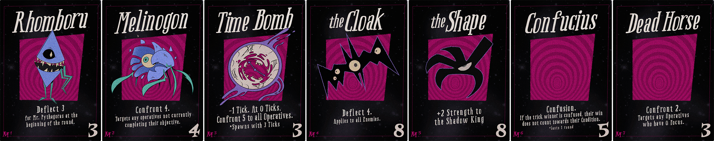
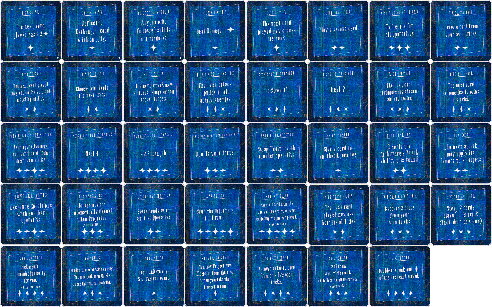
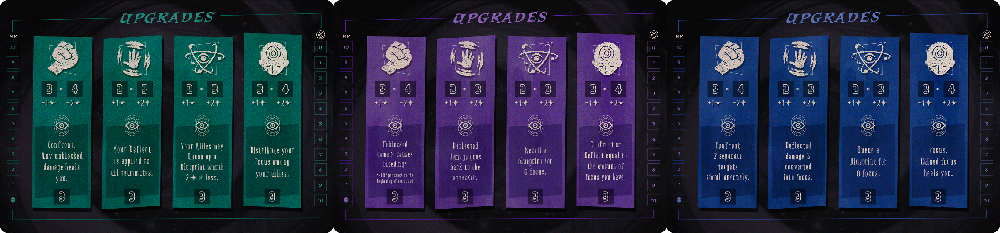

Sandmen, Inc.
Chicago. 1956. Psychoanalysis has failed. So your team goes deeper.
- Players3–5
- Time60–90 min
- Ages14+
- StatusIn Playtesting
The pitch
In this cooperative, trick-taking, boss-battler, a small company of fringe psychologists enters the dreams of people haunted by recurring nightmares. Each patient’s mind becomes a shared, hostile environment made of dream-matter: figures, places, feelings, and impossible situations. Across four REM cycles, the operatives must survive the dream’s attacks, grow stronger, and exorcise the nightmare at its source. Failure does not mean death. It means waking up, unpaid, with the nightmare still alive.
What makes a session
Every patient is its own puzzle. Combat objectives split the team into competing trick-taking goals; break abilities reward (or punish) operatives who refuse to follow suit; and the dream targets whoever leads or follows along. You can talk strategy between rounds, but you can never tell your colleagues what’s in your hand. The whole game lives in the gap between what you know and what you can communicate.
A curated genre tour
Every monster fight is engineered around a different innovation mined from the trick-taking genre. No two fights ask the same question.
Choose your objective
Each player picks a personal trick-taking objective at the start of the fight. The combination of choices is the cooperative puzzle.
Break the rules
You can always choose to break suit. Sometimes it’s exactly what the party needs. Sometimes it summons something it shouldn’t.
Six monsters, one campaign
From the Geometric Demon to the Mana Sucker, each boss is a self-contained design study with its own minions, moveset, and twist.
From the prototype
Pulled directly from the current playtest build — the four tomes, the monsters, their minions, and the blueprint cards that let players rewrite the rules mid-fight.





Status
Sandmen, Inc. is in active playtesting. We’re refining encounter pacing, balance, and component design ahead of a public preview. If you’d like to join the playtest list, drop us a line at playtest@tricoastalgames.com.